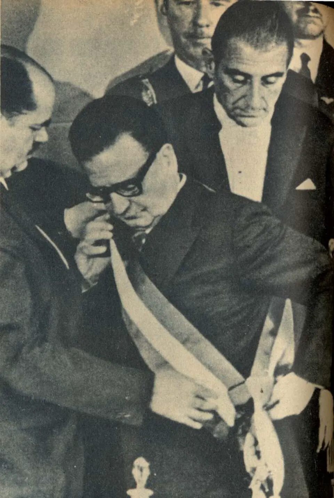

Elección de Salvador Allende

En la elección del 4 de septiembre de 1970 compitieron tres proyectos: la derecha, con el expresidente Jorge Alessandri; la Democracia Cristiana, con Radomiro Tomic; y la Unidad Popular, coalición de izquierda encabezada por Salvador Allende, que obtuvo la primera mayoría relativa con alrededor del 36% de los votos, seguida de cerca por Alessandri. Como nadie alcanzó la mayoría absoluta, la Constitución de 1925 establecía que el Congreso Pleno eligiera entre las dos primeras mayorías. La Democracia Cristiana condicionó su apoyo a la firma de un Estatuto de Garantías Constitucionales, y el 24 de octubre el Congreso ratificó a Allende. Dos días antes, el comandante en jefe del Ejército, René Schneider, fue atacado en un intento de secuestro que buscaba impedir esa ratificación, y murió el 25 de octubre. Investigaciones posteriores del Senado de Estados Unidos documentaron que el gobierno de ese país intentó impedir que Allende asumiera. Allende juró el 3 de noviembre de 1970 con el programa de la "vía chilena al socialismo": transformar la economía y la sociedad dentro del marco institucional. Su elección tuvo eco mundial en plena Guerra Fría y reflejó una sociedad dividida en "tres tercios".
Versión para niños
El 4 de septiembre de 1970, los chilenos votaron para elegir presidente. Ganó Salvador Allende, candidato de la Unidad Popular, un grupo de partidos de izquierda. Él quería llevar a Chile hacia el socialismo, pero respetando las leyes y las elecciones. Como no obtuvo más de la mitad de los votos, el Congreso tuvo que decidir y lo confirmó como presidente. Muchas personas lo apoyaban con entusiasmo y otras estaban muy preocupadas.
Para maestros
Nivel sugerido: 2° medio
Objetivo: Comprender el contexto político de la elección de 1970 y el funcionamiento del sistema electoral de la Constitución de 1925.
Preguntas para la clase:
- ¿Qué proponía cada uno de los tres candidatos de 1970?
- ¿Por qué la elección tuvo que ser resuelta por el Congreso?
- ¿Cómo influyó el contexto de la Guerra Fría en esta elección?
Actividad (20–30 min): En grupos, los estudiantes analizan fragmentos de los programas de los tres candidatos y completan una tabla con sus propuestas sobre economía, propiedad y rol del Estado. Luego discuten qué tenían en común y en qué se diferenciaban.
Fuentes sugeridas: Memoria Chilena; Biblioteca del Congreso Nacional (BCN); Biblioteca Nacional Digital.
Objetivos de Aprendizaje (Currículum Nacional)
- 2° medio · HI2M OA 08 Analizar la Guerra Fría como la confrontación ideológica de dos proyectos antagónicos que … se manifestó en distintos escenarios locales
- 2° medio · HI2M OA 10 Caracterizar el contexto de movilización social en América Latina como un escenario de tensión permanente entre revolución y reforma
- 2° medio · HI2M OA 13 Analizar el Chile de la década de 1960 … y de la Unidad Popular ("vía chilena al socialismo")
Personajes
Revisión humana pendiente. Cómo se revisa · Reportar un error
Cómo citar: Historia de Chile. (2026). Elección de Salvador Allende. En Historia de Chile: atlas y línea de tiempo. https://moises-salgado.github.io/historia-de-chile/momento/eleccion-de-salvador-allende.html